operanthouseのヘッダー
Kitaya lab
パーツの組み立て
※注意：2022年以前にページを開いたことがある場合、最新の写真が表示されない事があるため他のブラウザで開くか、キャッシュを削除してください。
用意するもの
パーツ： M2x20mmネジ, M3x8mmネジ, M2用ナット
工具： パーツ、ニッパー、瞬間接着剤（アロンアルファ）
※印刷物のバリはニッパーで除去しておいてください。
3Dプリンタの精度はそこまで良くないのでLED用の穴が小さくなっていると思いますので直径5mmのドリルで穴を広げて下さい。
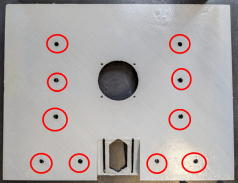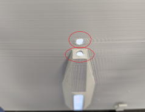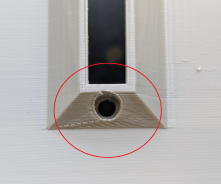
チャンバーに足を接着しましょう。
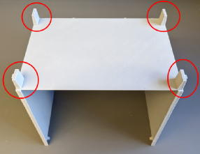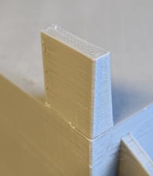
本体にビームを付け、裏側に足を付けます。
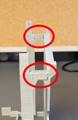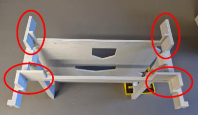
ﾊﾟﾈﾙマスクに黒で印刷したマスクホールボトムを接着します。
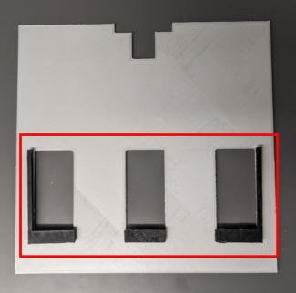
マスクホルダーを取り付けます。まずチャンバーをこの様に斜めにして下さい。
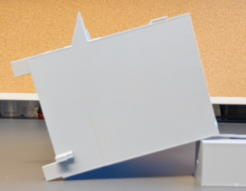
マスクをチャンバーの出っ張りに密着させます。
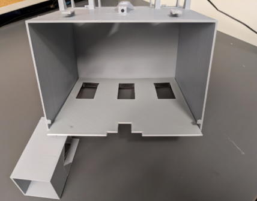
マスクホルダーをマスクに置くようにしてチャンバーと接着します。マスクはスライドして取り出せるようにするためマスクが接着されないよう注意して下さい。
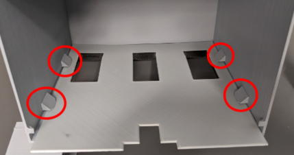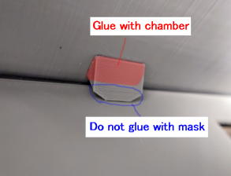
カメラを用いたスクリーンへのタッチ検出を行う場合はモニタースペーサーを両面テープで取り付けます。
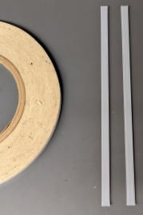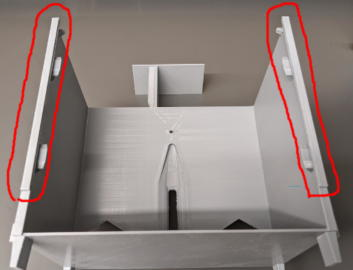
給水アームに錘として粘土を詰め、テープで蓋をします。
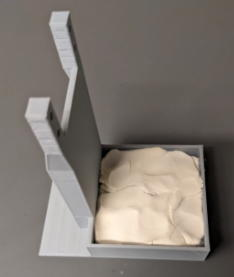 >>>

M3X20mmネジとナットでサーボを固定します。
<旧バージョン>
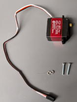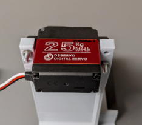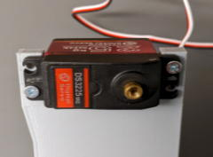
<新バージョン>
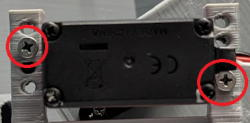
滑り止めは端の溝が埋まってしまっているため、ニッパーで切り落とします。そして給水アームの底面に接着します。向きに注意して下さい。
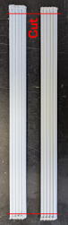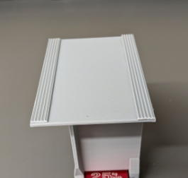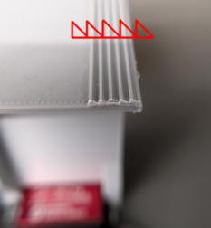
M3x8mmネジ(M3x20mmをニッパー切る事で代用可能)とM2x20mmネジとナットを準備します。次にサーボに付属するアームを写真の様にネジで固定します。
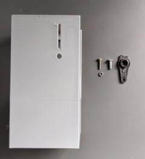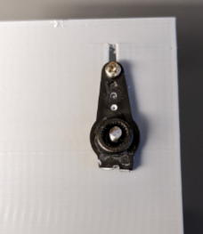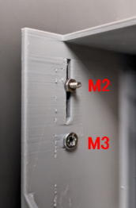
M3ネジを締めてサーボに装着します。
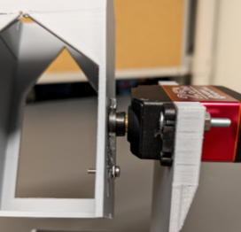
蓋のストッパーを取り付けます。全面に段差が出来ないようにチャンバーを仮置きします。
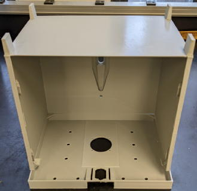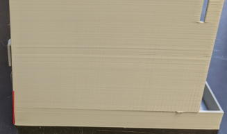
ストッパーを蓋の四か所に接着します。
※ストッパーはチャンバーに触れるように置き、蓋とのみ接着して下さい（蓋を取り外し可能にするため）。
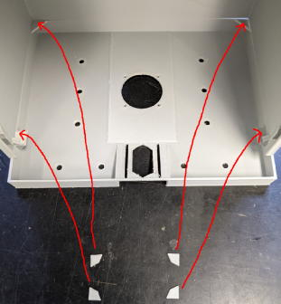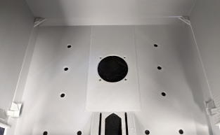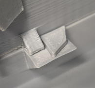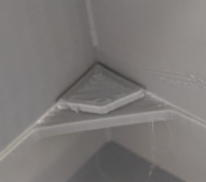
チャンバーをどけた際にこのようになっていればOKです。
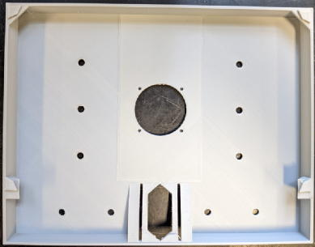
最後にチャンバーと本体をロック出来るか確認しましょう。嵌め輪を嵌めた時にチャンバーと本体がピッタリくっついていればOKです。
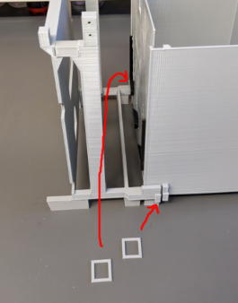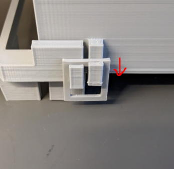
これでプラスティックパーツの組み立ては終了です。